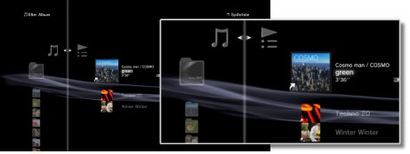
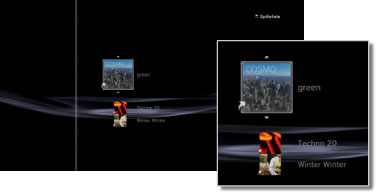

Musik > Brug af spillelister > Redigering af spillelister
Redigering af spillelister
Du kan tilføje eller slette spor fra en spilleliste eller ændre sporenes rækkefølge på spillelisten.
Tilføjelse af spor til spillelister
1. |
Vælg |
|---|---|
2. |
Vælg den spilleliste, som du vil redigere, og tryk derefter på |
3. |
Vælg [Rediger].  |
4. |
Brug retningsknapperne til at vælge det spor fra harddisken, der skal føjes til spillelisten. |
 (Musik) >
(Musik) >  (Spillelister).
(Spillelister). -tasten.
-tasten. -tasten for at stoppe redigeringen.
-tasten for at stoppe redigeringen.Sletning af spor fra spillelister
1. |
Vælg |
|---|---|
2. |
Vælg den spilleliste, som du vil redigere, og tryk derefter på |
3. |
Vælg [Rediger]. |
4. |
Vælg det spor, som du vil slette fra spillelisten, og tryk derefter på |
 -tasten.
-tasten.Tips
- Selvom et spor slettes fra en spilleliste, slettes musikfilen ikke på harddisken.
- Hvis et spor, der blev føjet til en spilleliste, slettes på harddisken, slettes sporet også automatisk fra spillelisten.
Ændring af sporenes rækkefølge på spillelister
1. |
Vælg |
|---|---|
2. |
Vælg den spilleliste, som du vil redigere, og tryk derefter på |
3. |
Vælg [Rediger]. |
4. |
Vælg det spor, som du vil flytte, og tryk derefter på  |
5. |
Flyt sporet til den ønskede placering med |
 -tasten.
-tasten.
 -knapperne, og tryk derefter på
-knapperne, og tryk derefter på